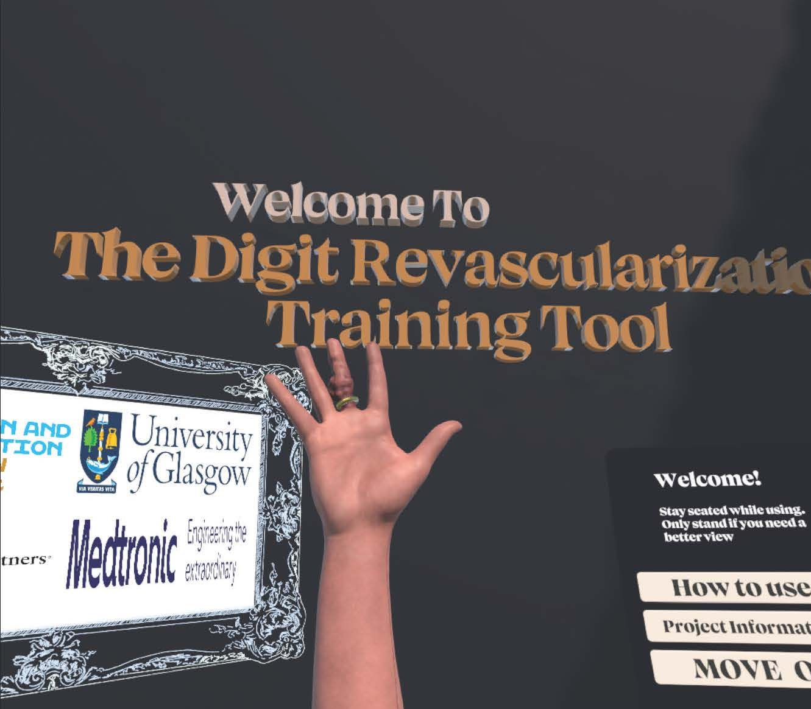
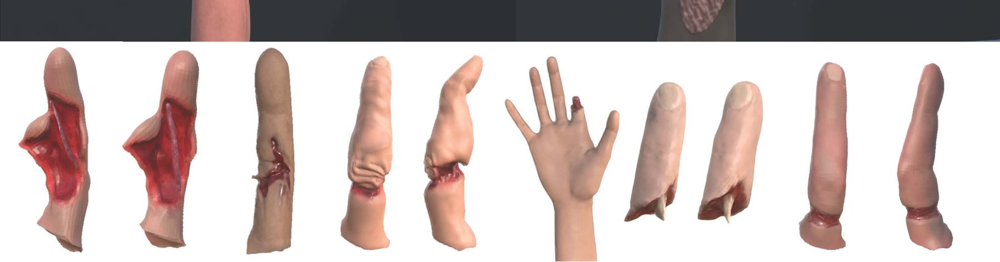
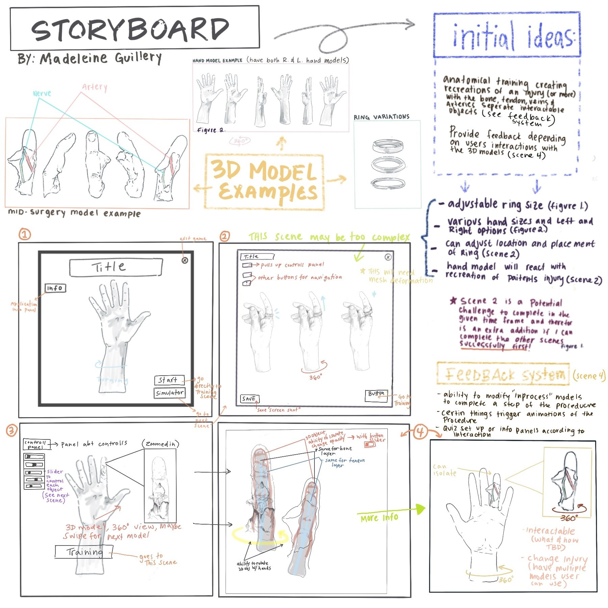
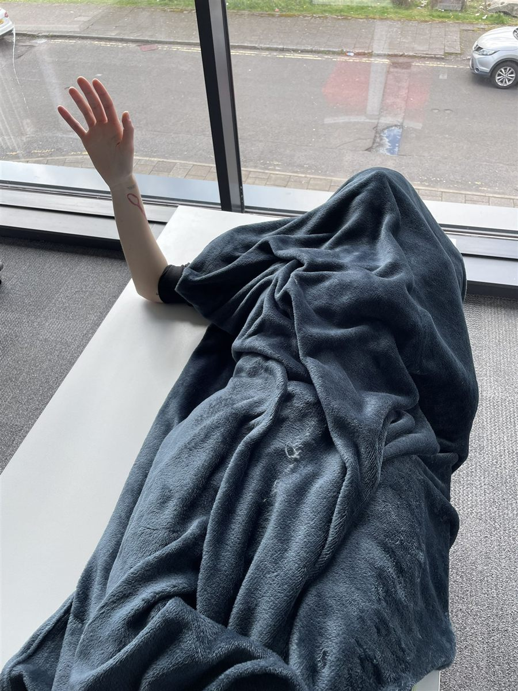
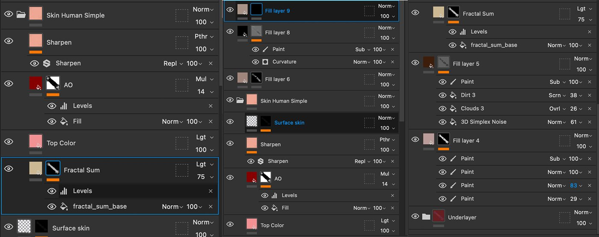
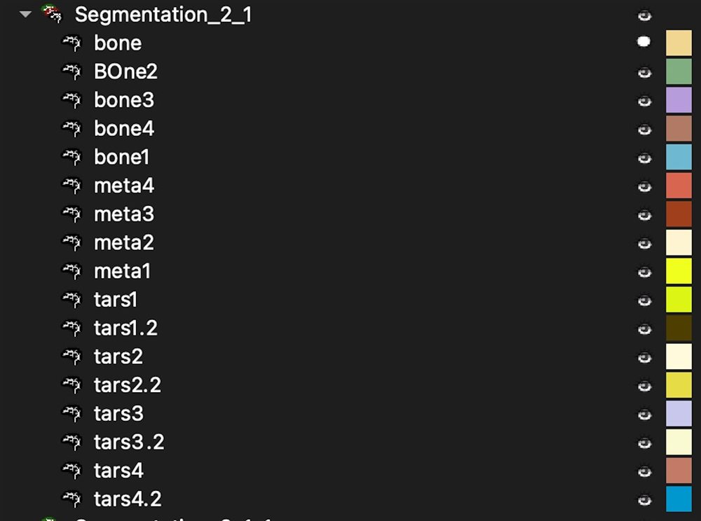
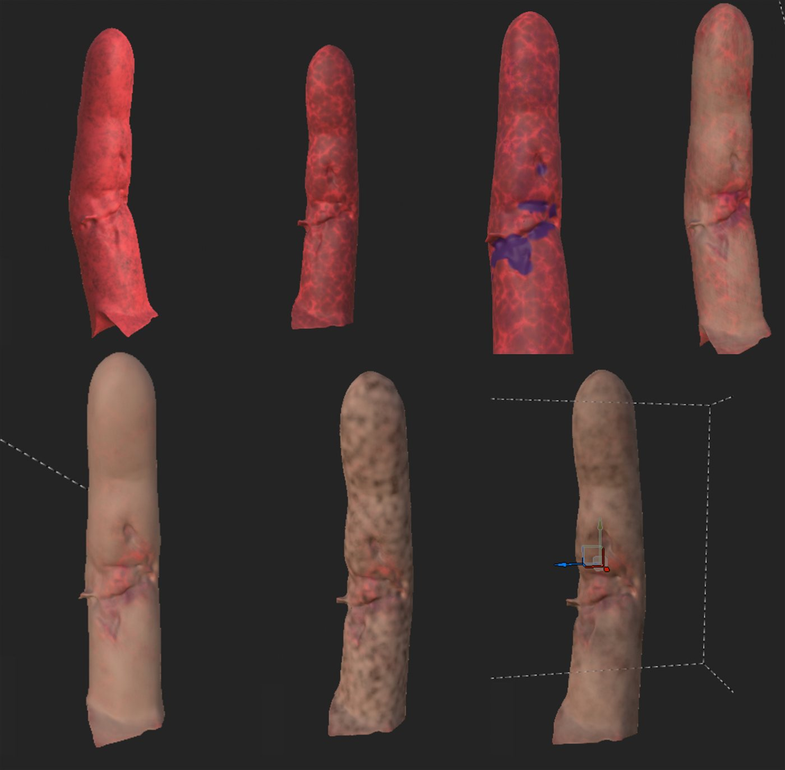
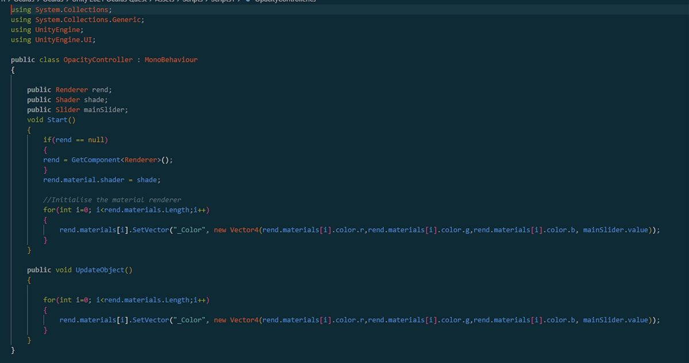
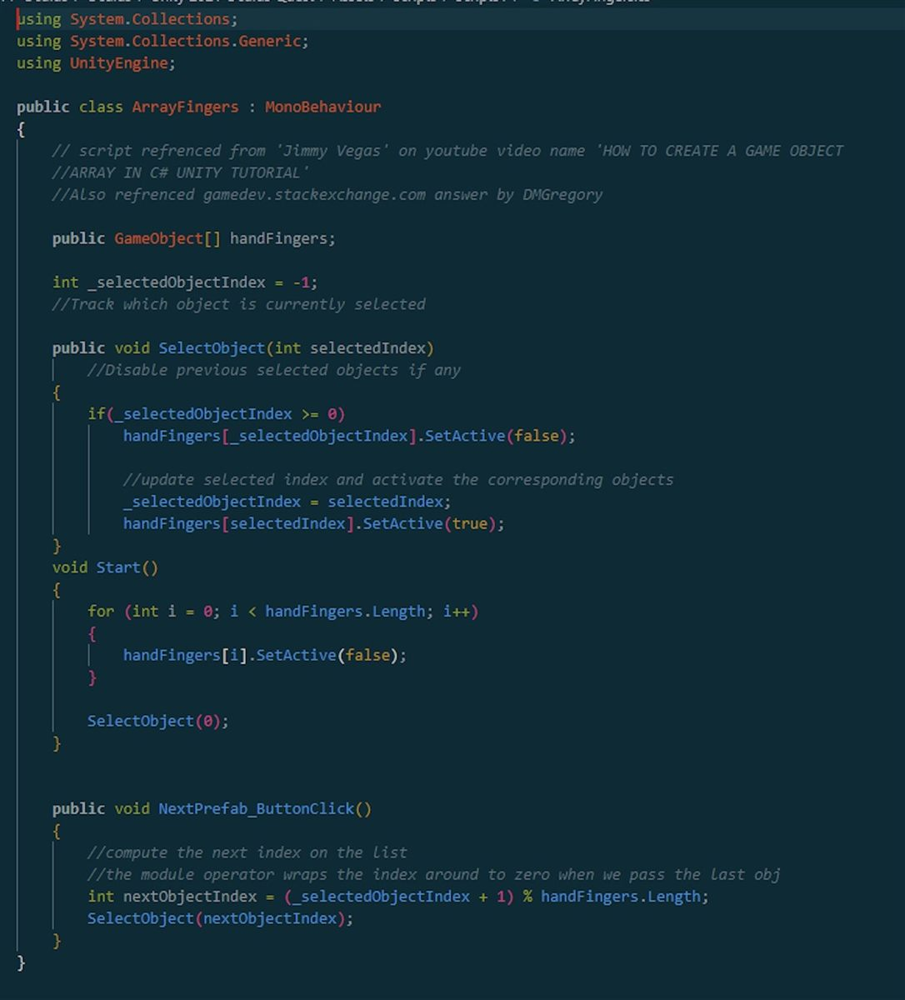
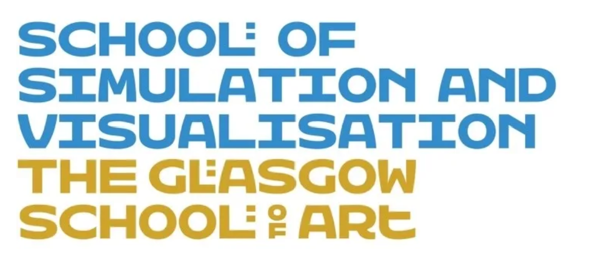

The Application


Thesis Project · 2023
An interactive VR surgical simulator for reconstructive hand surgery training — simulating critical stages in digit replantation to build surgeons’ anatomical knowledge, cognizance, and motor cognition.


Injury & Healing State Variations







The aim of this project is to investigate the potential of interactive virtual reality surgical simulators for reconstructive hand surgery training and education. This application, which can be accessed via a VR compatible computer and headset, will simulate critical stages in digit replantation procedures to train surgeons on anatomical knowledge, cognizance, and motor cognition. The app provides an immersive 3D digital surgical environment where users can manipulate objects using their own hands. By offering an efficient tool to visualize injuries at a macro and micro scale, the app aims to enhance surgeons’ familiarity with and exposure to complicated and infrequently seen procedures, such as digit revascularization. The app builds on existing microsurgical training tools and explores the viability of a VR-based training tool compared to current training methods.
Special thanks to Dr. Matthieu Poyade, Dr. Jenny Clancy, and Matt Burke from Medtronic, as well as Dr. Scott Loewenstein from HealthPartners and the University of Minnesota Surgery Department.


Explore More
See more medical visualization work